PhishStrike Lab Walkthrough
https://cyberdefenders.org/blueteam-ctf-challenges/phishstrike/
Scenario :
As a cybersecurity analyst for an educational institution, you receive an alert about a phishing email targeting faculty members. The email, appearing from a trusted contact, claims a $625,000 purchase and provides a link to download an invoice. Your task is to investigate the email using Threat Intel tools. Analyze the email headers and inspect the link for malicious content. Identify any Indicators of Compromise (IOCs) and document your findings to prevent potential fraud and educate faculty on phishing recognition.
Question 1
Identifying the sender's IP address with specific SPF and DKIM values helps trace the source of the phishing email. What is the sender's IP address that has an SPF value of softfail and a DKIM value of fail?
Lets start by analyzing the email header. This can be done either using automated tools (such as PhishTools etc.) but I will do this using a text editor.
It is already mentioned in the question that the sender IP has SPF value of softfail and DKIM value of fail.
**Note : both SPF and DKIM should ideally never have a value other than ‘Pass’ if the email is legitimate.
Looking at the Authentication-Results section, we have the answer.
{kind=link}
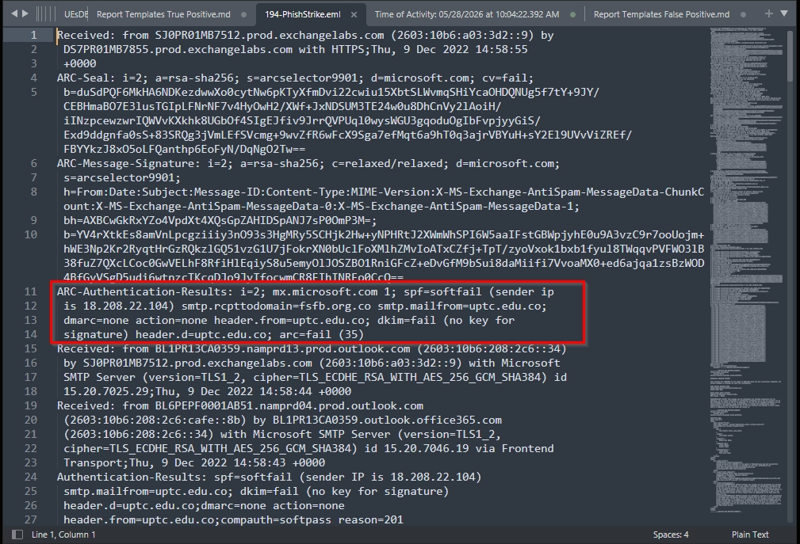
Question 2
Understanding the return path of the email helps in tracing its origin. What is the return path specified in this email?
The Return-Path header in the email headers provides the answer to this question. The Return-Path header (also called the envelope sender or bounce address) is a hidden email header that tells receiving servers where to send delivery failure notifications and bounce messages. Threat actors change this value to their own address so that any ‘reply’ from the reciepient is sent to them instead.
{kind=link}
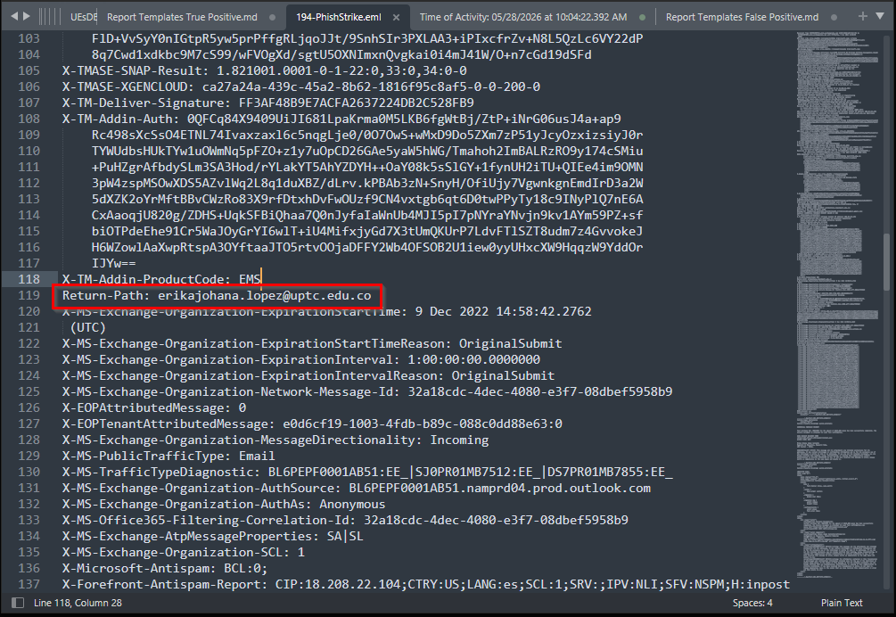
Question 3
Identifying the source of malware is critical for effective threat mitigation and response. What is the IP address hosting the malicious file associated with malware distribution?
Looking at the email body section, we can see that the email is formatted as an HTML and the link to the supposed ‘invoice’ document can be found within the anchor tags.
{kind=link}
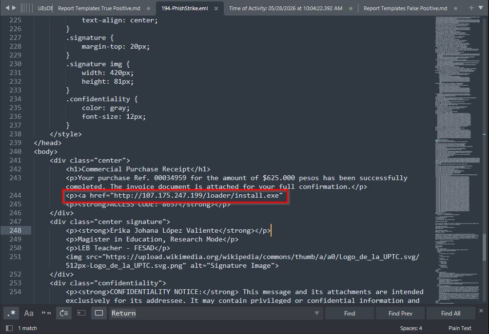
Question 4
Identifying malware that exploits system resources for cryptocurrency mining is critical for prioritizing threat mitigation efforts. The malicious URL can deliver several malware types. Which malware family is responsible for cryptocurrency mining?
So far, we know that the URL is malicious and it is used to distribute multiple types of malware. Let us check the malicious URL with URLHaus for more information.
Based on the report from URLHaus, this URL is used to host 3 types of malware viz,
BitRAT, AsyncRAT and CoinMiner
{kind=link}
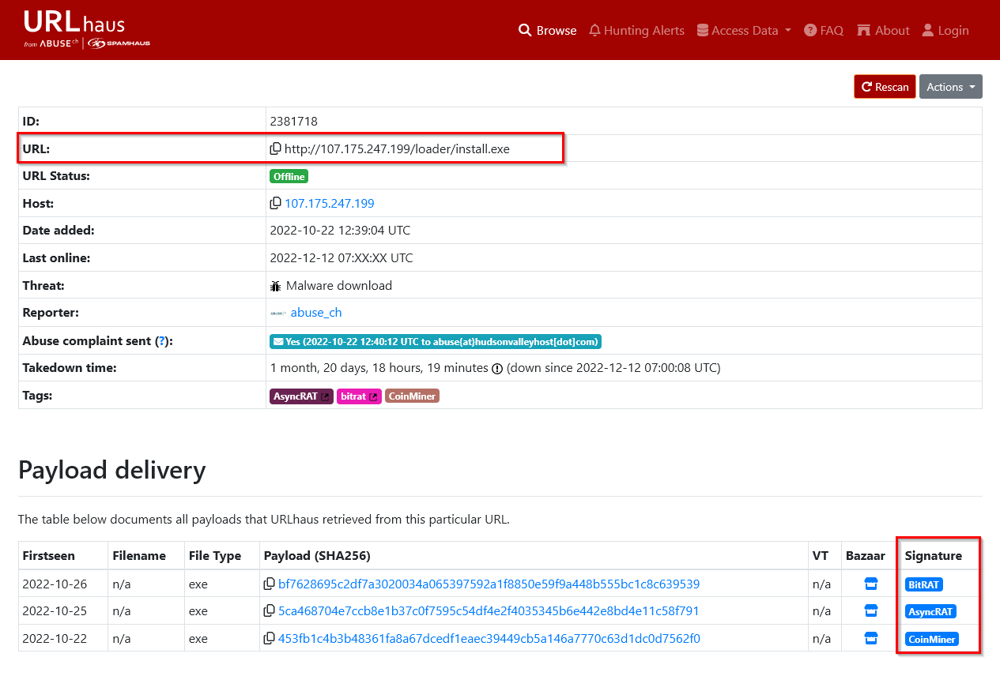
Question 5
Identifying the specific URLs malware requests is key to disrupting its communication channels and reducing its impact. Based on the previous analysis of the cryptocurrency malware sample, what does this malware request the URL?
We have the SHA256 hash value of the malware. We can use it to understand malware behavior. Using VirusTotal’s Relations tab, we can see what URLs the malware has contacted.
{kind=link}
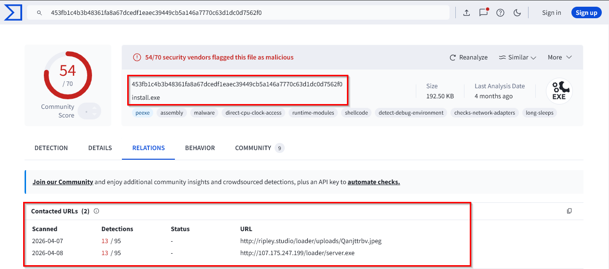
Question 6
Understanding the registry entries added to the auto-run key by malware is crucial for identifying its persistence mechanisms. According to the analysis of BitRAT, what is the executable name in the first value added to the registry auto-run key?
Just like the previous question, we can use VirusTotal and search using the SHA256 value of the malware and understand its behavior. We can find our answer in the Registry actions section in the Behavior tab.
{kind=link}
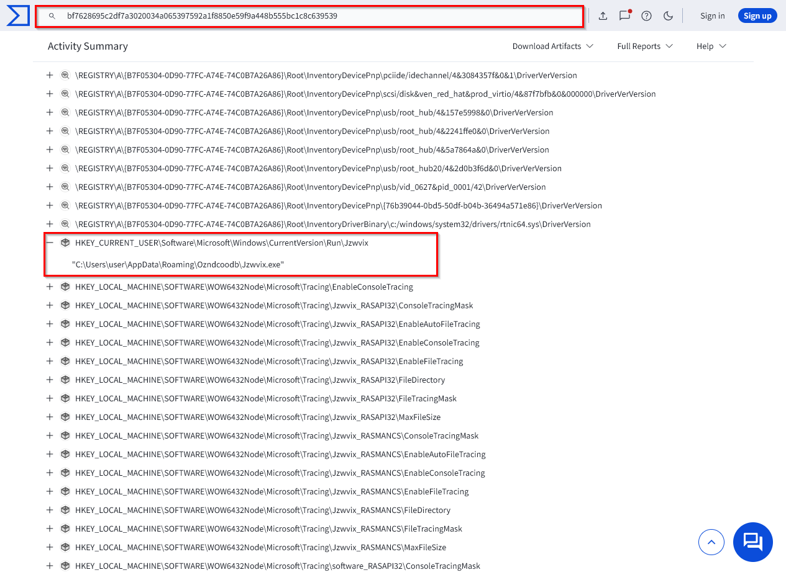
Question 7
Identifying the SHA-256 hash of files downloaded from a malicious URL is essential for tracking and analyzing malware activity. Based on the BitRAT analysis, what is the SHA-256 hash of the file previously downloaded and added to the autorun keys?
We are looking for the SHA-256 hash of the file mentioned in the previous question. To find this, we will take a look at the Files Dropped section in the Behavior tab and search for the filename.
{kind=link}
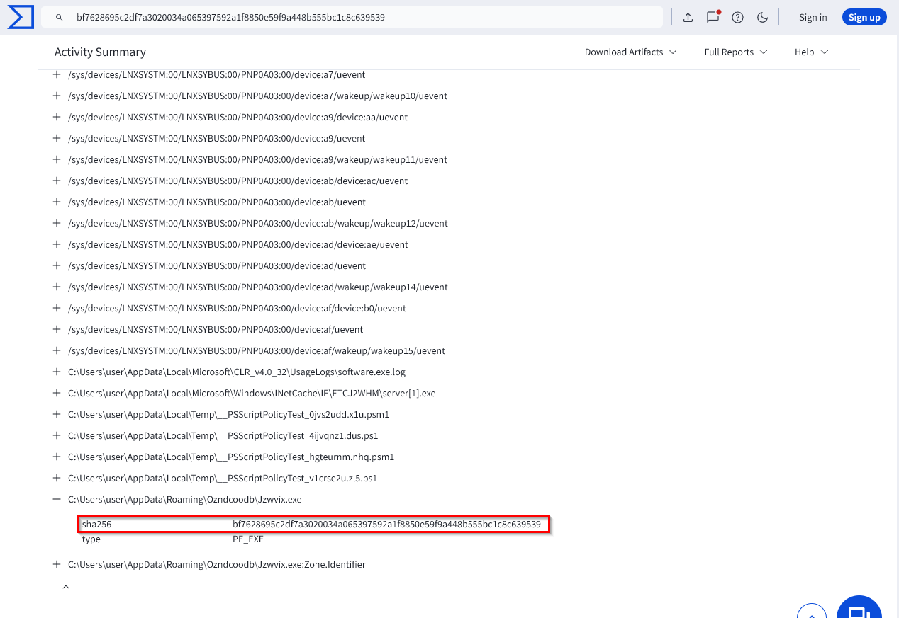
Question 8
Analyzing the HTTP requests made by malware helps in identifying its communication patterns. What is the HTTP request used by the loader to retrieve the BitRAT malware?
Back to VirusTotal for this answer. In the Behavior tab under Network communications section, we can see a section that displays all the HTTP requests made by the malware.
{kind=link}
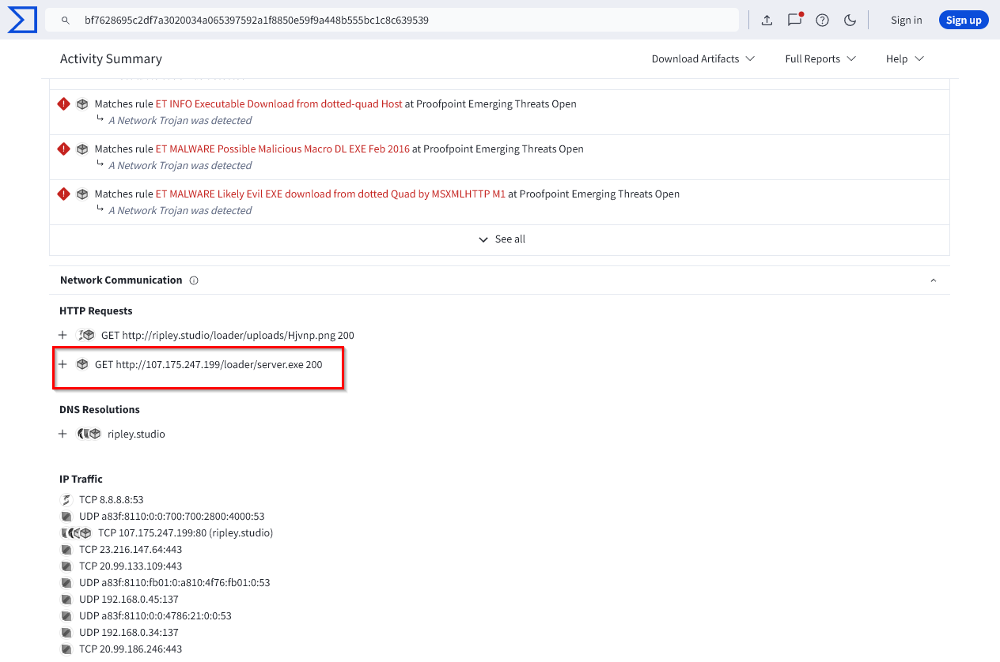
Question 9
Introducing a delay in malware execution can help evade detection mechanisms. What is the delay (in seconds) caused by the PowerShell command according to the BitRAT analysis?
In the Behavior tab under the section process tree, we can see that the binary (PID:7900) spawned a powershell process (PID:4404) that executed a base64 encoded command.
I used CyberChef to decode it.
{kind=link}
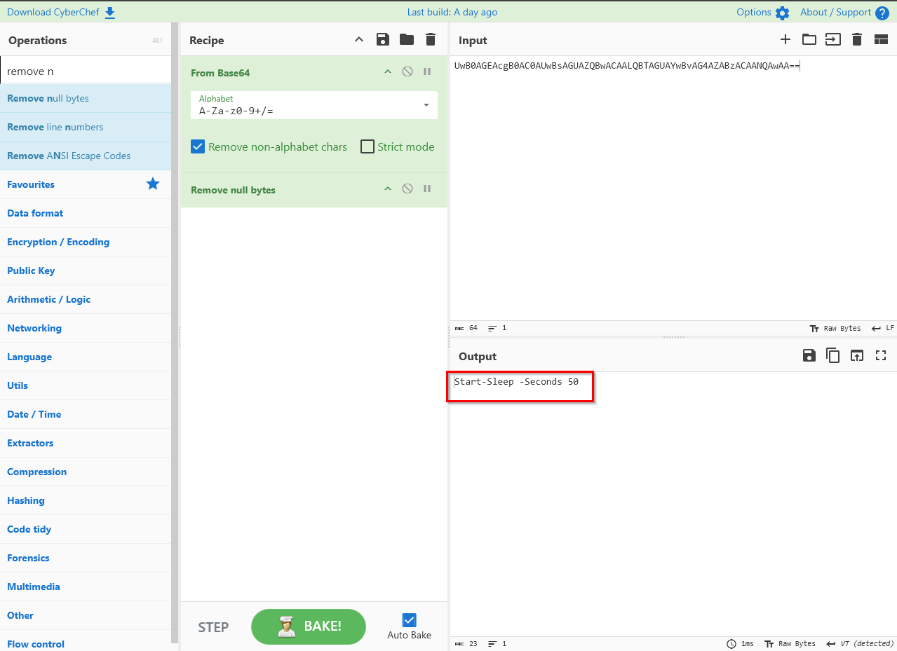
Question 10
Tracking the command and control (C2) domains used by malware is essential for detecting and blocking malicious activities. What is the C2 domain used by the BitRAT malware?
I tried to find this using the DNS Resolutions section under the Behavior tab on Virus Total, but it only showed one entry which was definitely not the C2.
So I decided to look into the any.run report and see if I can find the C2 in the DNS resolutions.
{kind=link}
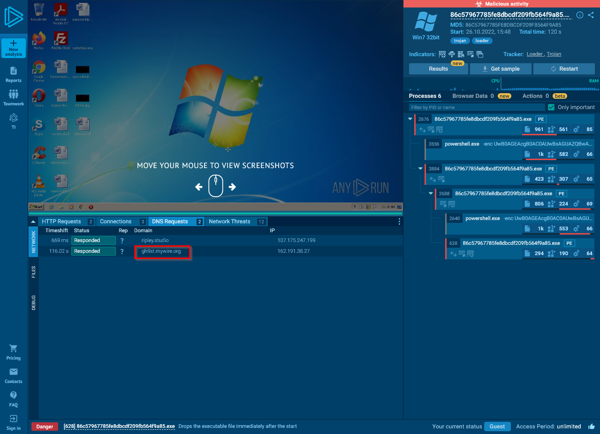
Question 11
Understanding how malware exfiltrates data is essential for detecting and preventing data breaches. According to the AsyncRAT analysis, what is the Telegram Bot ID used by this malware?
I searched for the SHA256 hash of AsyncRAT on malware bazaar and went through a couple of Vendor Threat Intelligence reports.
While going through the report by Hatching Triage, I was able to see the exact GET request that the malware sample was making to Telegram’s API.
{kind=link}
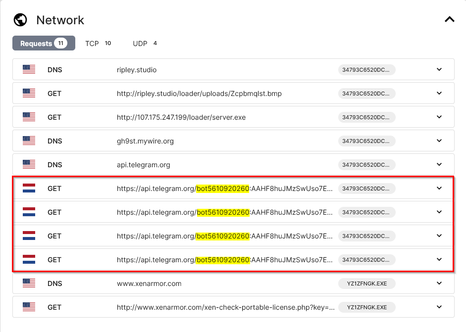